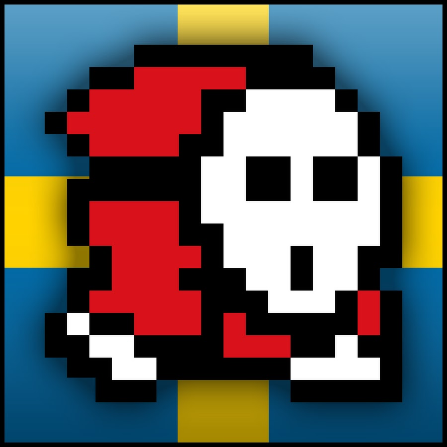
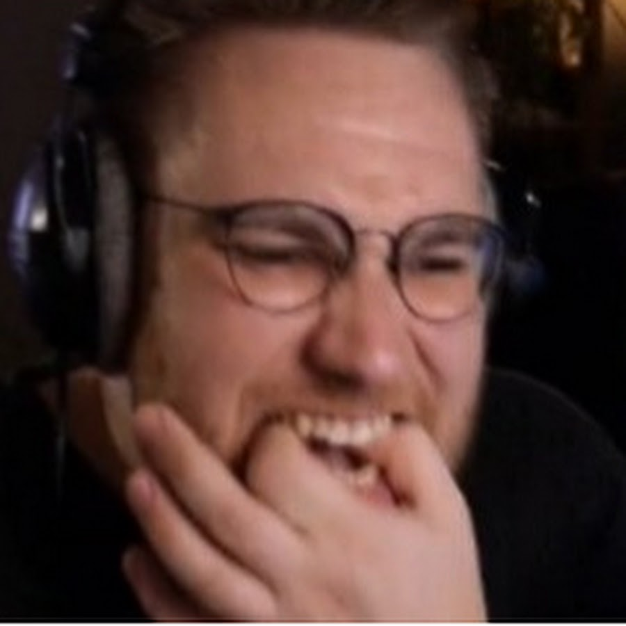

Counter Strike 2

Det bilde over meg er en youtuber som heter Anomaly. Han er en cs youtuber og han lager videor med pappaen hans og vennene hans.
Jeg synes han er den morsomte csgo youtubern. Han lager mange case opening videor og masse annet.
her er en liten video med pappaen hans

Det bilde over meg er en youtuber som heter Ohnepixel. Han gjør mange case opening som Anomaly og bruker mye penger på spille.
han er også en populær counter strike youtuber. Her er en liten video av Ohnepixel.